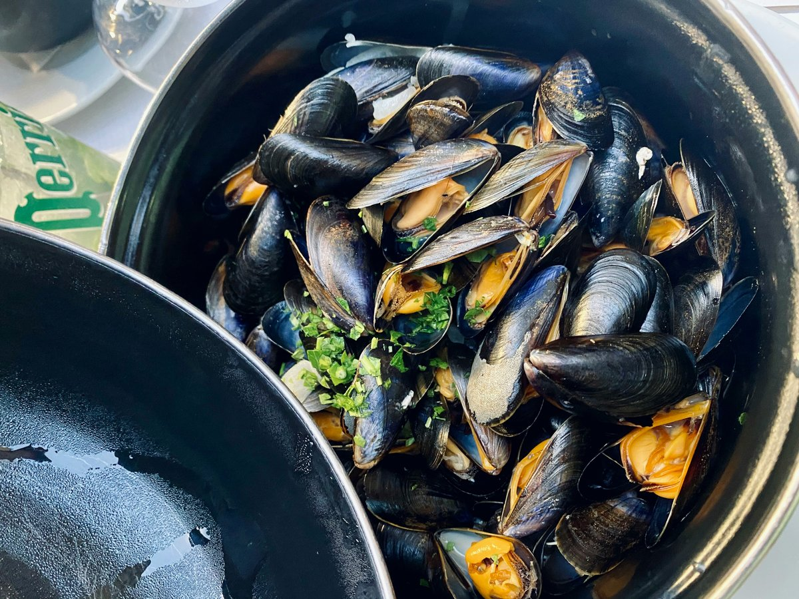

← Toutes les recettes
Moules au bleu (Roquefort)
Des moules marinière revisitées avec une sauce crémeuse au fromage bleu, fondante et corsée.

Ingrédients
- Moules de bouchot, grattées et ébarbées2 kg
- Échalotes, ciselées3
- Gousse d'ail, hachée1
- Beurre30 g
- Vin blanc sec200 ml
- Crème fraîche épaisse200 ml
- Roquefort (ou bleu d'Auvergne), émietté150 g
- Poivre du moulin1 pincée
- Persil plat frais, ciselé2 c. à soupe
- Noix, concassées (facultatif)2 c. à soupe
Étapes
- Dans une grande cocotte, faire fondre le beurre à feu moyen. Ajouter les échalotes et l'ail, et faire suer 2-3 minutes sans coloration.
- Verser le vin blanc, augmenter le feu, puis ajouter les moules. Couvrir et laisser cuire en remuant une fois à mi-cuisson, jusqu'à ce que les moules soient toutes ouvertes.
- Retirer les moules avec une écumoire et réserver au chaud dans un grand saladier. Filtrer le jus de cuisson pour retirer le sable éventuel, puis le remettre dans la cocotte.
- Faire réduire légèrement le jus filtré à feu moyen pendant 2 minutes. Ajouter la crème fraîche et le roquefort, et fouetter jusqu'à ce que le fromage soit complètement fondu et la sauce onctueuse. Poivrer selon le goût, le roquefort est déjà salé, inutile d'ajouter du sel.
- Remettre les moules dans la sauce, mélanger délicatement pour bien les enrober. Parsemer de persil et de noix. Servir immédiatement, avec des frites ou du pain croustillant pour saucer.
Choisir un bleu pas trop fort (type bleu d'Auvergne) pour une saveur plus douce, ou du roquefort pour un goût plus corsé. Une partie de la crème peut être remplacée par du Saint-Marcellin ou du Saint-Félicien pour une texture encore plus fondante. Éviter de resaler avant d'avoir goûté la sauce finale.